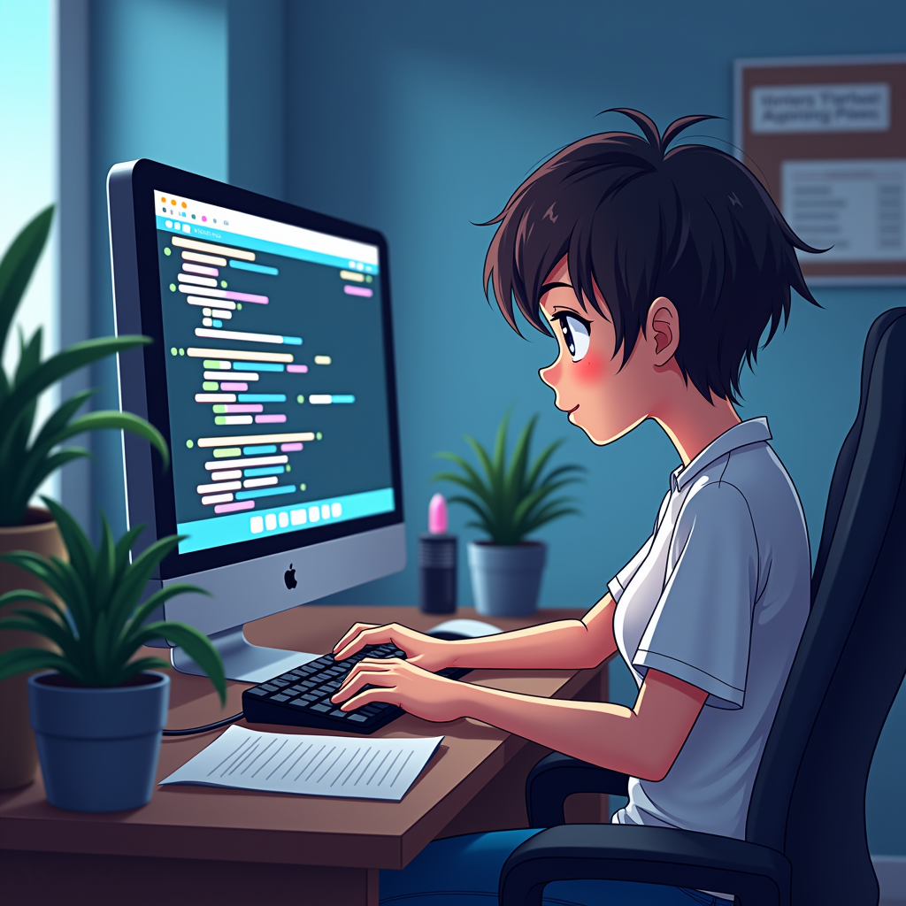
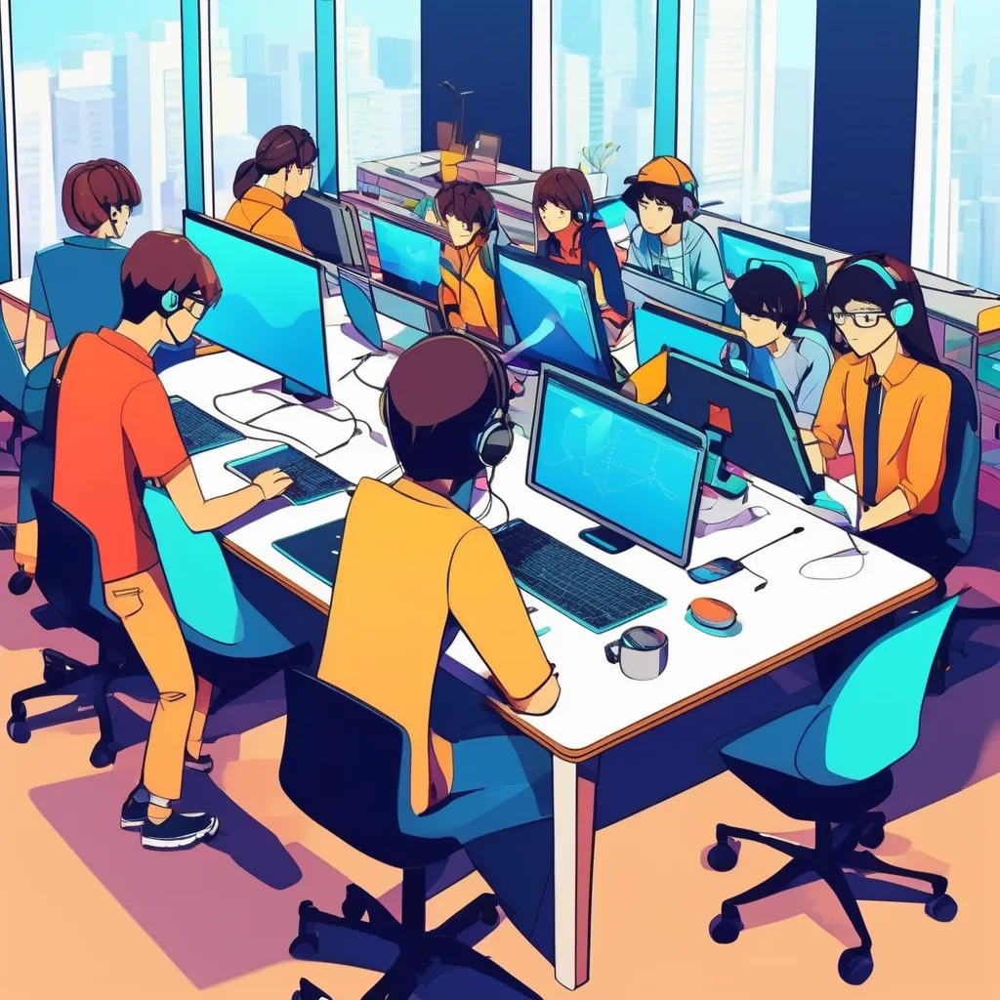

🌱 Siempre estoy buscando formas de mejorar mis habilidades y mantenerme al día con las últimas tendencias en desarrollo web.
🎮 Fuera del mundo del desarrollador, disfruto de otras actividades que me ayudan a mantener un equilibrio saludable. Soy un gran jugador de videojuegos, amante del anime y me gusta practicar deporte ya sea de forma individual o en equipo.
Algunas de ellas son: | HTML | CSS | JavaScript | Java | PHP | React | pero puedes verlas todas en el apartado del menú "Stack tecnológico"
Consultoria 4I en base a las peticiones del cliente creaba el producto deseado con un equipo de desarrolladores.
Proyectos personales mientras realizaba el grado y las prácticas iba formándome para mejorar, realizando algunos proyectos personales.

CFGS en Desarrollo de Aplicaciones Web, con más de 600 horas de prácticas en empresa. Durante mi formación, he desarrollado proyectos que abarcan desde el desarrollo web hasta la administración de bases de datos, entre otros.